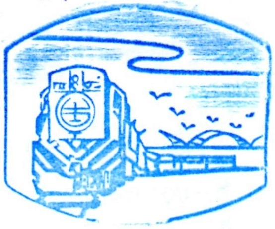

-

新北投駅
日付： 2021/10/20
スタンプ注釈：
スタンプの映像は、新北投駅から淡水まで青い電車で往復の状況と思われる。人は電車に乗る時に、窓から青い空やマングローブの景色の後、綺麗な観音山や關渡大橋を見える状況が想像できる。
-

百年を経つ記憶を戻る
新北投駅は、1916年から温泉と観光産業を発展するため、新北投乗降場が設置された。1988年に淡水線の鉄道が運休した後で、彰化民俗村に一円の価格を買われてしまったから、2017年に元所在地の近くに建て直す。今は淡水線の唯一保存している駅である。
新北投駅の展覧に当時の駅の場面が見られる。百年前に残っている切符売り場と当時のキャップの価格表を見ると、物価と時代が変わっていた。展覧で木の駅や黒電話と、車両中の大同の扇風機などがなんとなく懐かしい感覚を感じられた。紹介を見学した後、まるでお爺さんは駅に乗る状況と当時賑やかな北投のようにまだ見られる。